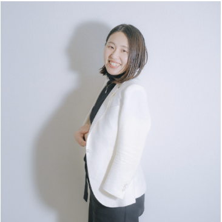
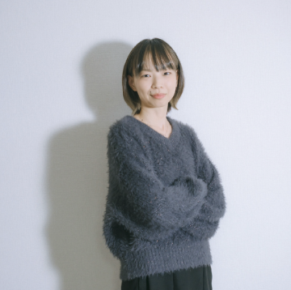
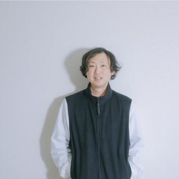
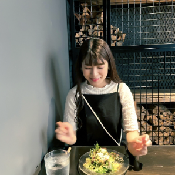

私たちは「山陰から全国へ」をテーマに、
SNSを起点として企業や地域とつながり、
その魅力を最大限に引き出します。
単なる支援者ではなく、
経営者や組織と併走し、
共に成果を創り上げるパートナーでありたい。
イメージの言語化、洗練されたビジュアル、
そして実行力で、あなたの事業を
「勝てるビジネス」へと導きます。
モットーは「自分の人生を味わい尽くす」。
新規事業の立ち上げ、ブランディング構築、コンセプト・商品設計、マーケティング戦略まで。想いを「勝てる形」に落とし込みます。
1枚で圧倒的に引き込む広告写真。価値が伝わり、選ばれる写真制作を行います。宣材写真やWEB/SNS/LP用写真に。
アカウント設計、投稿企画、リール動画の台本・導線設計まで。世界観を統一したショート動画ブランディングを徹底的にサポートし、集客の柱を構築します。
スマホ撮影、SNS運用、動画編集の各種講座。企業・団体向け（社内広報部やSNS担当者様）の広報・発信研修も実施しています。
ローカルコンテンツの企画・制作。地域を軸にした新たなブランド立ち上げ（実績：「浜田だから。」プロジェクト等）により地域の価値を高めます。
地方で活躍するモデルの育成・サポート。「人」で心が動くリアリティのある広告作成、地方の風景の価値を高める作品づくり。
PIXTA等での人物特化素材や、STORESでの世界観重視の風景・抽象写真を自社販売。最新のトレンドを捉えた素材を提供。
SNS運用2ヶ月で、半年後の売上目標を達成。
オープン前からのリール動画戦略が認知拡大に直結。お店の看板イラストをキャラクター化する発想でイメージを強化。現在もフォロワー数、店舗売上ともに右肩上がりで推移しています。オーナー様の強みを活かし、店舗運営に集中できる環境を構築しました。
SNS集客から実際の成約へ直結。
新規アカウント立ち上げからサポート。単なる物件紹介ではなく、ターゲット層が気になる部分を魅力的に見せることで、SNSから直接問い合わせが来る動線を構築。LINE設計も行い、登録者は200名を突破しました。
TRUSTED BY
島根県浜田市の魅力発見コンテンツ。
SNS制作・運用や写真展の開催を通じ、地域の価値を再定義しています。

SNSを起点に企業や地域とつながり、営業力と実行力で成果に直結させることを得意とします。イメージの言語化とコミュニケーション力が強み。

オシャレさの中に「つい見たくなる動画」を構成。届けたい想いをそのまま魅せる『世界観』づくりが強みです。

写真とデザインで最強の広告をワンストップで制作。写真・言葉・発信・人のネットワークを組み合わせて“勝ち筋”を描きます。

「おいしそう」「行ってみたい」と思わせるグルメ系ショート動画が得意。県内の飲食事業のPRを強力にサポートします。